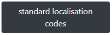
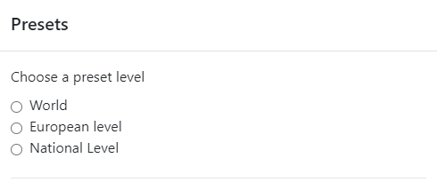
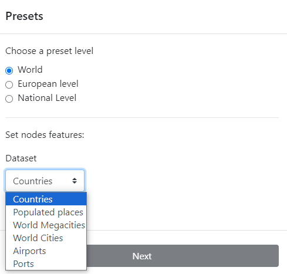
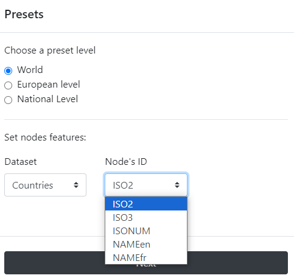
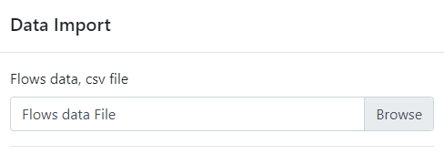
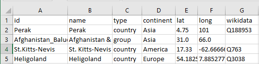
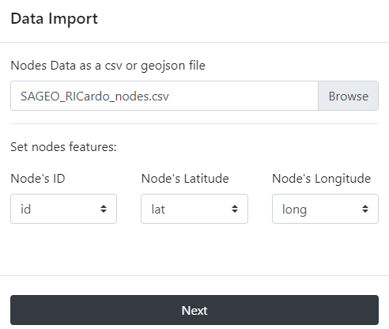
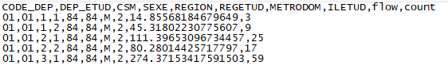
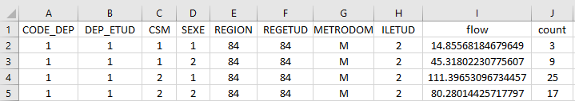
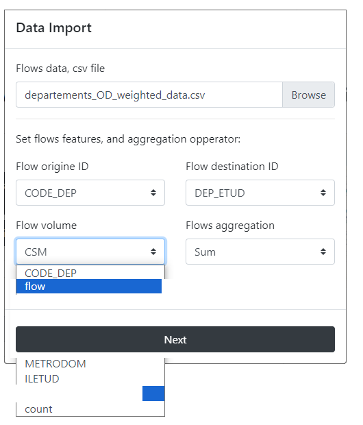

Arabesque also allows you to import your own data sets (at least a file of links/flows)
(1) flowdata in the form of an origin-destination matrix (adjacency long format in .csv), to agregate them if necessary and (2) nodes dataset before building a readable flowmap.
For this tutorial, we will use for example the historical trade flows listed in the RICardo database.
For more informations about the dataset and its use with Arabesque, see in DATA SETS AND EXAMPLES.
Arabesque accepts as input files in the following format: .CSV, .JSON and .geoJSON.
In Arabesque 2, you must first load the node file then the flow file.
2.1. Nodes/vertex dataset importation
nodes can be declared using a local preset if they are standards nodes, or by loading an external node file.
2.1.1. Standard localisation codes

Arabesque provides a list of codes identifying the most common spatial units at different geographical scales, at global, at European or at a national level.

At global level, for example, different grids are available (countries, towns, ports, etc.).

The choice of the world country level, for example, then leads to the identification of the type of identifier code: ISO2, ISO3, etc.

Once the type of identifier code has been selected (e.g. ISO2), the link file must be chosen.

2.1.2. Custom localisation file
If you have custom nodes data associated with your ODs, you can load the corresponding files by selecting the custom button.
Then you have to browse to pick a .CSV or a GEOJSON file.
The .CSV file must be in long format, and have separator : , and decimal : .
See example below.
Example: the SAGEO_RIcardo_nodes.CSV file

The most important here are the column ‘lat’ (Y) and ‘long’ (X) which will be used to geolocate the origin and the destination places, then the column ‘ID’
Once you have identified these three columns (ID, lat, long), you can import the nodes.

If you do not have a file for the geometry, you can use the codes identifying the reference data (e.g. INSEE codes of the French communes, ISO codes of the countries), to automatically geolocate your nodes. See Preset.
2.2. Flow importation
Then you need to browse your directories to find the path to the OD matrix.
The flow file must be in CSV (separator : , and decimal : .) and in long format. See example below.
Example: the Mobscol origin-destination .CSV file

The same file in .XLSX format.

Once the origin and destination IDs have been identified, they need to be declared in Arabesque for importing flows.

If the matrix is complex (categorical and/or temporal), you are asked to select the link aggregation function, so that Arabesque draws only one line (and not as many lines for each attribute in the flow file).
Note that the flow mapping according to one of these attributes is done in the filtering section.
After loading the link and node files, Arabesque automatically performs a join of the common attributes between the two files.
After loading the link and node files, Arabesque automatically performs a join of the common attributes between the two files.
2.3. Checking missing nodes/links features
Links that do not have an origin and/or destination ID are automatically deleted. Nodes that don’t have an ID code that allows them to be geographically located are also not kept.
The list of links and nodes that may have been delete during the importation procedure is displayed in a new window.
This list is for quick reference only. You must copy and paste it (into a text file, for example) if you want to keep the summary of the deleted entities : here 5 nodes and 729 likns. Nodes have been deleted because they are not related to other nodes.
After loading the link and node files, Arabesque automatically performs a join of the common attributes between the two files and computes indicator on botk links and nodes data.
2.4. Import a flowmap project
Import a previously workspace of flowmapping by loading a project file in .zip format.